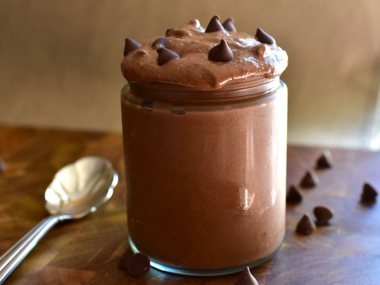

Healthy Brownie

Desciption
Cottage Cheese Brownie Batter is a creative and protein-packed twist on a classic treat that satisfies your chocolate cravings while keeping things healthy. This recipe combines creamy cottage cheese with cocoa powder, sweeteners, and a few simple ingredients to create a smooth, velvety, and indulgent brownie-flavored batter you can enjoy guilt-free.
The recipe is customizable—you can adjust the sweetness, add your favorite toppings like berries, nuts, or shredded coconut, and even use it as a dip for fruits or crackers. Whether you’re a fitness enthusiast or just looking for a creative way to enjoy dessert, Cottage Cheese Brownie Batter is a fun and delicious option that’s both wholesome and satisfying.
Ingredients
- 1 cup 4% milkfat small curd cottage cheese
- 6 tablespoons maple syrup, or to taste
- 3 tablespoons unsweetened cocoa powder
- 3 tablespoons quick oats
- 1 tablespoon almond butter
- 1 teaspoon vanilla extract
- 1 teaspoon instant espresso powder (optional)
- 1 pinch salt, or to taste
- 1 cup blanched superfine almond flour
- 5 tablespoons semisweet chocolate chips
Steps
- Place cottage cheese, maple syrup, cocoa powder, oats, almond butter, vanilla, espresso powder, and salt into the cup of a high-speed blender. Blend until ingredients are smooth. Add almond flour to blender and blend until combined. Pulse if necessary to prevent warming the mixture.
- Pour batter into a bowl and fold in chocolate chips. Serve immediately, or cover and keep stored in the refrigerator for up to 5 days.
Home